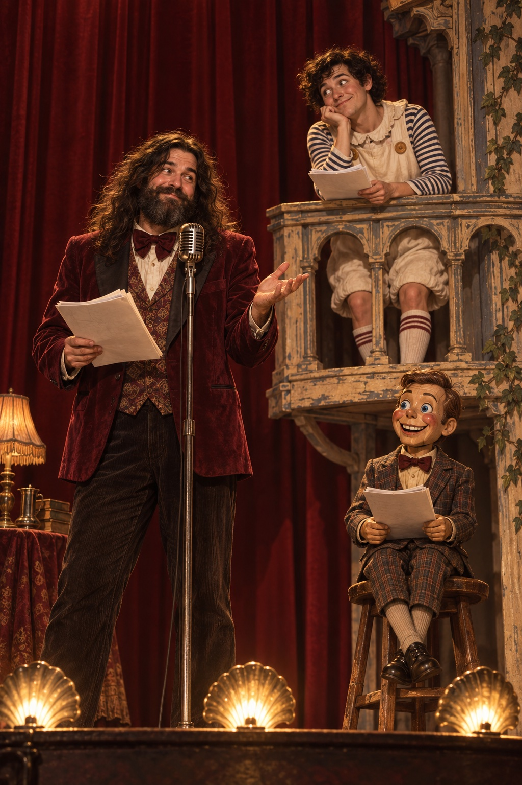

← Free Reads
Uncle Prod’s
Masterpiece Dinner Theater
Peter Mangiaracina
Sensitive material
Contains sexual humor, crude language, and satirical references.Listen to the original radio performance
Read the complete script below.
Script
Loading the script…